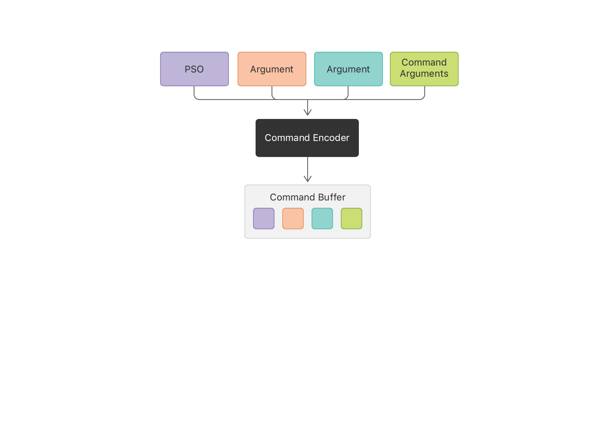

使用 Metal 并行计算
图形处理器 GPU 旨在快速渲染图形、并行计算数据；Metal 提供了一套与硬件 GPU 直接通信的 API ！
Demo 演示了如何使用 Metal 执行并行计算！
针对两个数组对应位置的元素相加得到第三个数组：
- 常规做法是，遍历两个数组，拿到对应位置的元素，然后做加法，并赋值给第三个数组的对应位置；
/// C 语言编写的两个数组元素相加
void add_arrays(const float* inA,
const float* inB,
float* result,
int length) {
for (int index = 0; index < length ; index++) {
result[index] = inA[index] + inB[index];
}
}
在 Metal 中，在 GPU 上运行的代码称为 着色器!
而使用 Metal 执行上述计算，可以同时启用多条线程，每条线程处理一个索引处的元素加法，而非遍历数组！
- 要在 GPU 上执行计算，需要使用
Metal Shading Language(MSL) 重写上述任务函数； - MSL 是 C++ 的一种变体，专为 GPU 编程而设计；
- 在 Metal 中，在 GPU 上运行的代码称为 着色器，因为历史上它们首先用于计算 3D 图形中的颜色；
/** for 循环被替换为一个线程集合，每个线程都调用这个函数
* @param index 每个线程的唯一索引，通过该索引，获取数组对应位置的元素
*/
kernel void add_arrays(device const float* inA,
device const float* inB,
device float* result,
uint index [[thread_position_in_grid]]) {
result[index] = inA[index] + inB[index];
}
MSL 函数使用关键字 kernel 来修饰，声明该函数为 public GPU 函数；在应用程序中是唯一的，不能被其它 MSL 函数调用。
1、寻找 GPU
设备中可能有多个 GPU ，开发者需要指定一个可用的 GPU ！
/// MTLDevice 是对 GPU 的抽象类，可以使用它与 GPU 进行通信。
/// 使用下述函数获取一个默认 GPU
id<MTLDevice> device = MTLCreateSystemDefaultDevice();
2、做一些准备工作
2.1、获取 Metal 函数的引用
编译程序时，Xcode 会编译 .metal 文件中的函数并将其嵌入到 Metal 的默认库中；开发者首先需要拿到 默认库 实例，再获取 MSL 函数对象。
/// 创建一个默认库对象，加载工程中的所有 .metal 文件
id<MTLLibrary> defaultLibrary = [device newDefaultLibrary];
if (defaultLibrary == nil) {
NSLog(@"Failed to find the default library.");
return nil;
}
/// 向资源库请求 MSL 函数的对象
id<MTLFunction> addFunction = [defaultLibrary newFunctionWithName:@"add_arrays"];
if (addFunction == nil) {
NSLog(@"Failed to find the adder function.");
return nil;
}
2.2、获取 Metal 函数的可执行代码
MTLFunction 对象仅仅作为代理，而非可执行代码；需要创建一个计算管道，将 MSL 代理转为可执行代码；
- 在 Metal 中，计算管道由
MTLComputePipelineState实例表示； - 创建
MTLComputePipelineState实例时，MTLDevice对象将为该 GPU 完成函数的编译；
/// 同步创建一个 MTLComputePipelineState 对象
{
id<MTLComputePipelineState> mAddFunctionPSO = [device newComputePipelineStateWithFunction:addFunction error:&error];
NSAssert(mAddFunctionPSO, @"Failed to created pipeline state object, error %@.", error);
// 使用Xcode debug 程序时，默认开启 Metal API 验证，这样可以获取详细的出错信息
}
注意：MTLDevice 对函数的编译是一个耗时操作，建议异步创建 Metal 管道！
/// 异步创建一个 MTLComputePipelineState 对象
{
[_device newComputePipelineStateWithFunction:addFunction completionHandler:^(id<MTLComputePipelineState> _Nullable computePipelineState, NSError * _Nullable error) {
NSAssert(!error, @"计算管道创建失败 : %@",error);
}];
}
2.3、创建一个命令队列
Metal 通过对命令队列的调度将任务发送到 GPU。
/// 通过 MTLDevice 实例来创建一个命令队列
id<MTLCommandQueue> mCommandQueue = [device newCommandQueue];
NSAssert(mCommandQueue, @"Failed to find the command queue.");
完成准备工作后，需要提供数据供 GPU 执行。
3、准备数据
3.1、专用GPU内存 与 共享GPU内存
GPU内存由 专用GPU内存 和 共享GPU内存 组成。
专用GPU内存：
- 就是只能被GPU使用的内存；
- 对于独显，专用GPU内存就是GPU显卡上自带的内存，特点是带宽大，延迟小；
- 对于集显，专用GPU内存是指BIOS从系统内存中分配给集显GPU专用的内存，也称为stolen memory。
共享GPU内存：
- 就是GPU和其他应用共享操作系统内存，其中，GPU的使用优先级最高；
- 共享GPU内存值的大小由操作系统根据系统内存大小来分配，开发者无法修改；
3.2、Metal 工作
Metal 和操作系统内核需要将数据存储在内存中供 GPU 使用。
MTLResource抽象了内存管理， 是 GPU 在运行命令时可以访问的内存分配。- 使用
MTLDevice为其 GPU 创建MTLBuffer实例，MTLBuffer是没有预定义格式的内存分配； - Metal 将缓冲区作为一个不透明的字节集合进行管理；
const unsigned int arrayLength = 1 << 24;
const unsigned int bufferSize = arrayLength * sizeof(float);
{
id<MTLBuffer> mBufferA = [device newBufferWithLength:bufferSize options:MTLResourceStorageModeShared];
id<MTLBuffer> mBufferB = [device newBufferWithLength:bufferSize options:MTLResourceStorageModeShared];
/// 不妨使用随机数据填充前两个缓冲区
[self generateRandomFloatData:mBufferA];
[self generateRandomFloatData:mBufferB];
/// 缓存 GPU 的运算结果
id<MTLBuffer> mBufferResult = [device newBufferWithLength:bufferSize options:MTLResourceStorageModeShared];
}
/// 使用随机数填充缓冲区，完成测试
- (void)generateRandomFloatData:(id<MTLBuffer>) buffer {
float* dataPtr = buffer.contents;
for (unsigned long index = 0; index < arrayLength; index++) {
dataPtr[index] = (float)rand()/(float)(RAND_MAX);
}
}
注意： 着色器中使用的数据格式必须与缓冲区的数据格式保持一致！
3.2.1、内存储存策略
/// CPU 或 GPU 是否可以访问该存储区的一种存储模式
typedef NS_OPTIONS(NSUInteger, MTLResourceOptions) {
MTLResourceCPUCacheModeDefaultCache = MTLCPUCacheModeDefaultCache << MTLResourceCPUCacheModeShift,
MTLResourceCPUCacheModeWriteCombined = MTLCPUCacheModeWriteCombined << MTLResourceCPUCacheModeShift,
/// 共享内存， CPU 或 GPU 都可以访问
MTLResourceStorageModeShared = MTLStorageModeShared << MTLResourceStorageModeShift,
MTLResourceStorageModeManaged = MTLStorageModeManaged << MTLResourceStorageModeShift,
MTLResourceStorageModePrivate = MTLStorageModePrivate << MTLResourceStorageModeShift,
MTLResourceStorageModeMemoryless = MTLStorageModeMemoryless << MTLResourceStorageModeShift,
MTLResourceHazardTrackingModeDefault = MTLHazardTrackingModeDefault << MTLResourceHazardTrackingModeShift,
MTLResourceHazardTrackingModeUntracked = MTLHazardTrackingModeUntracked << MTLResourceHazardTrackingModeShift,
MTLResourceHazardTrackingModeTracked = MTLHazardTrackingModeTracked << MTLResourceHazardTrackingModeShift,
// Deprecated spellings
MTLResourceOptionCPUCacheModeDefault = MTLResourceCPUCacheModeDefaultCache,
MTLResourceOptionCPUCacheModeWriteCombined = MTLResourceCPUCacheModeWriteCombined,
};
4、调度任务
4.1、为队列创建一个命令缓冲区
id<MTLCommandBuffer> commandBuffer = [mCommandQueue commandBuffer];
assert(commandBuffer != nil);
4.2、创建命令编码器
要将命令写入命令缓冲区，还需要对命令编码：
- 创建命令编码器
MTLComputeCommandEncoder，对计算管道中的命令列表编码； - 每个命令都会使 GPU 创建线程组以在 GPU 上执行。
id<MTLComputeCommandEncoder> computeEncoder = [commandBuffer computeCommandEncoder];
assert(computeEncoder != nil);

要对命令进行编码，需要对编码器做一些配置：
- 设置要编码的计算管道
- 进行这些状态更改后，对命令进行编码以执行管道。
- 编码器将所有状态变化和命令参数写入命令缓冲区。
- (void)encodeAddCommand:(id<MTLComputeCommandEncoder>)computeEncoder {
/// 设置要编码的计算管道
[computeEncoder setComputePipelineState:_mAddFunctionPSO];
/// 偏移量 offset=0 表示命令将从缓冲区的开头访问数据
/// 还可以共同使用一个缓冲区来存储多个参数，为每个参数指定一个偏移量
[computeEncoder setBuffer:_mBufferA offset:0 atIndex:0];
[computeEncoder setBuffer:_mBufferB offset:0 atIndex:1];
[computeEncoder setBuffer:_mBufferResult offset:0 atIndex:2];
/// 数组的长度决定网格的大小
MTLSize gridSize = MTLSizeMake(arrayLength, 1, 1);
NSUInteger threadGroupSize = _mAddFunctionPSO.maxTotalThreadsPerThreadgroup;
if (threadGroupSize > arrayLength) {
threadGroupSize = arrayLength;
}
MTLSize threadgroupSize = MTLSizeMake(threadGroupSize, 1, 1);
[computeEncoder dispatchThreads:gridSize
threadsPerThreadgroup:threadgroupSize];
}
### 4.2.1、指定一维网格的大小
Metal 可以创建 1D、2D 或 3D 网格，此处只需创建一维网格即可!
/// 数组的长度决定网格的大小，创建大小为 1 x 1 的一维网格，Metal 从中生成 0 到 -1 之间的索引 MTLSize gridSize = MTLSizeMake(arrayLength, 1, 1);
### 4.2.2、指定线程组大小
需要决定为命令创建多大的线程组：
* Metal 将网格细分为更小的网格，称为 __线程组__；每个线程组是单独计算的；
* Metal 可以将线程组分派到 GPU 上的不同处理单元以加快处理速度；
/// 计算管道给出线程组中允许的最大线程数：该数值取决于创建计算管道时传入的函数的复杂性； NSUInteger threadGroupSize = _mAddFunctionPSO.maxTotalThreadsPerThreadgroup;
/// 如果该大小大于数据集的大小，则将其缩小 if (threadGroupSize > arrayLength) threadGroupSize = arrayLength; MTLSize threadgroupSize = MTLSizeMake(threadGroupSize, 1, 1);
### 4.2.3、对命令进行编码以执行线程
最后，对命令进行编码以调度线程组。
当 GPU 执行此命令时，会使用之前设置的状态和命令参数来调度线程执行计算。
[computeEncoder dispatchThreads:gridSize threadsPerThreadgroup:threadgroupSize];
可以使用编码器按照上述步骤将多个命令编码到计算通道中；
例如，设置管道状态对象一次，然后为待处理的每个缓冲区集合设置参数并编码命令。
## 4.3、停止编码
当没有更多命令添加到计算管道时，需要结束编码过程以关闭计算管道。
[computeEncoder endEncoding];
## 4.4、命令缓冲区的命令提交
通过将命令缓冲区提交到队列来运行命令缓冲区中的命令。
[commandBuffer commit];
* 命令队列 `MTLCommandQueue` 创建了命令缓冲区，因此提交缓冲区总是将它放在该队列中；
* 提交命令缓冲区后，Metal 异步准备要执行的命令，然后调度命令缓冲区在 GPU 上执行；
* GPU 执行完命令缓冲区中的所有命令后，Metal 将命令缓冲区标记为完成；
## 4.5、计算完成的处理
GPU 异步处理提交的命令。这个示例不需要做任何额外的工作，所以它只是等待直到命令缓冲区完成。
[commandBuffer waitUntilCompleted];
也可以在 Metal 处理完所有命令时收到通知：
[commandBuffer addCompletedHandler:^(id
还可以通过读取命令缓冲区的属性来检查命令缓冲区的状态：
typedef NS_ENUM(NSUInteger, MTLCommandBufferStatus) { MTLCommandBufferStatusNotEnqueued = 0, MTLCommandBufferStatusEnqueued = 1, MTLCommandBufferStatusCommitted = 2, MTLCommandBufferStatusScheduled = 3, MTLCommandBufferStatusCompleted = 4, MTLCommandBufferStatusError = 5, } API_AVAILABLE(macos(10.11), ios(8.0));
commandBuffer.status;
## 4.6、从缓冲区读取结果
* 命令缓冲区调度完成后，GPU 将计算结果输出到缓冲区中；
* 在程序中，需要从缓冲区读取结果并对其进行处理，例如在屏幕上显示结果或将它们写入文件。
该示例读取输出缓冲区的值，仅验证 CPU 和 GPU 计算结果是否相同：
float a = _mBufferA.contents; float b = _mBufferB.contents; float* result = _mBufferResult.contents;
for (unsigned long index = 0; index < arrayLength; index++) { if (result[index] != (a[index] + b[index])) { /// 如果不同，则打印差异性 printf("Compute ERROR: index=%lu result=%g vs %g=a+b\n", index, result[index], a[index] + b[index]); assert(result[index] == (a[index] + b[index])); } } ```